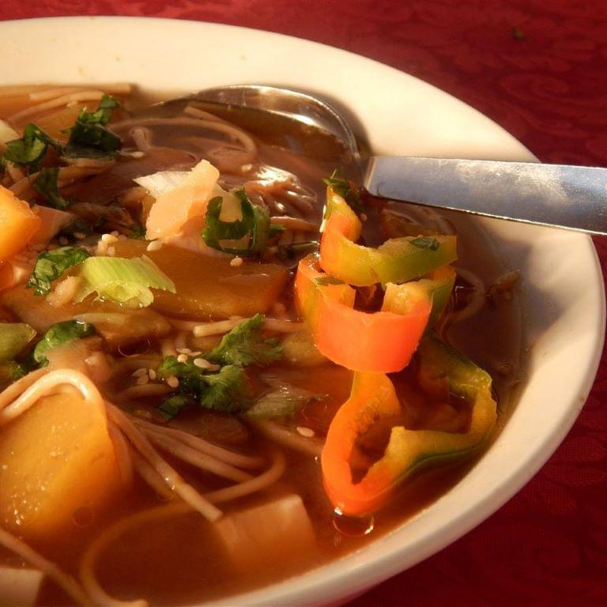

Pumpkin and Tofu Soup

Ingredients
- ¼ small pumpkin - peeled, seeded, and cubed
- 3½ ounces firm tofu, cubed
- 2 teaspoons sesame oil
- 2 green onions, finely chopped on the diagonal
- 2 large red chile peppers, sliced on the diagonal
- 2 tablespoons toasted sesame seeds
- 2 tablespoons chopped fresh cilantro, or more to taste
- 2 tablespoons pickled ginge
- 1 (2 inch) piece fresh ginger, cut into matchsticks
- 2 tablespoons soy sauce
- 2 ounces buckwheat noodles
- 2 teaspoons miso paste
Directions
- Bring a large saucepan of water to a boil; add pumpkin, ginger, and soy sauce. Cook pumpkin mixture for about 3 minutes. Add noodles to pumpkin mixture and cook until noodles are slightly cooked, about 4 minutes.
- Stir tofu into pumpkin-noodle mixture and cook until pumpkin and noodles are almost tender, 5 to 10 more minutes
- Place 1 teaspoon miso paste into each serving bowl. Ladle cooking water into each bowl and whisk until miso is dissolved.
- Divide pumpkin-tofu soup between the 2 serving bowls; garnish each with 1 teaspoon sesame oil, 1 chopped green onion, 1 sliced red chile pepper, 1 tablespoon sesame seeds, 1 tablespoon cilantro, and 1 tablespoon pickled ginger.